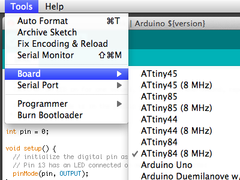
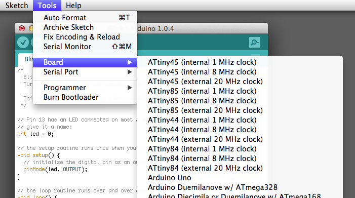

This tutorial shows you how to program an ATtiny45, ATtiny85, ATtiny44 or ATtiny84 microcontroller using the Arduino software. These are small, cheap ($2-3) microcontrollers that are convenient for running simple programs. The ATtiny45 and ATtiny85 have eight legs and are almost identical, except that the ATtiny85 has twice the memory of the ATtiny45 and can therefore hold more complex programs. The ATtiny44 and ATtiny84 have 14-legs and more inputs and outputs. Thanks to Mark Sproul for his work on making the Arduino core portable across processors.
ATtiny45/85 vs. an Arduino Board
The ATtiny45 or 85 is a great option for running simple Arduino programs: it’s small, cheap and relatively easy to use. It does, however, have some limitations relative to the ATmega328P on an Arduino Uno. There are fewer pins, meaning you can’t connect as many components. There’s less flash memory (4KB or 8KB instead of 32KB), meaning your programs can’t be as big. There’s less RAM (256 or 512 bytes instead of 2KB), meaning you can’t store as much data. And there’s no hardware serial port or I2C port (Wire library), making communication trickier. (There are workarounds, like the SoftwareSerial library or the TinyWire library, but they’re not as robust and flexible.)
In short, then, if your project requires only a few simple inputs and/or outputs, you’re probably fine using an ATtiny. If you’re trying to hook up more components or do more complex communication or data processing, though, you’re probably better off with something like the ATmega328P on an Arduino Uno. If you want something smaller and cheaper than a full Arduino board, you might try using an ATmega328P on a breadboard instead.
Materials and Tools
For this tutorial, you’ll need:
- An in-system programmer (ISP), a piece of hardware used to load programs onto the ATtiny. Options include:
- The Tiny AVR Programmer, a board we developed with SparkFun specifically for programming ATtiny45/85s.
- Another commercial programmer like the AVRISP mkII or USBtinyISP.
- a Arduino Uno or Duemilanove (w/ an ATmega328, not an older board with an ATmega168). See this tutorial for using an Arduino board as a programmer
- ATtiny45 or ATtiny85 (8-pin DIP package) or an ATtiny44 or ATtiny84.
- a solderless breadboard and jumper wires (unless you’re using the TinyProgrammer w/ the ATtiny45 or 85)
For more information, see our list of materials and parts and our list of prototyping supplies.
Installing ATtiny support in Arduino 1.6.4
In Arduino 1.6.4, you can install the ATtiny support using the built-in boards manager.
- Open the preferences dialog in the Arduino software.
- Find the “Additional Boards Manager URLs” field near the bottom of the dialog.

- Paste the following URL into the field (use a comma to separate it from any URLs you’ve already added):
https://raw.githubusercontent.com/damellis/attiny/ide-1.6.x-boards-manager/package_damellis_attiny_index.json - Click the OK button to save your updated preferences.
- Open the boards manager in the “Tools > Board” menu.

- Scroll to the bottom of the list; you should see an entry for “ATtiny”.

- Click on the ATtiny entry. An install button should appear. Click the install button.

- The word “installed” should now appear next to the title of the ATtiny entry.

- Close the boards manager. You should now see an entry for ATtiny in the “Tools > Board” menu.


Installing ATtiny support in older versions of Arduino
If you’re using an older (1.0.x) version of the Arduino software (e.g. 1.0.6), you’ll need to download and install the ATtiny files manually. Note that the ATtiny’s work best with the newer, 1.6.x, versions of the Arduino software. You can use the older, 1.0.x, versions of the software, but there may be some bugs. (For example, there’s one that prevents the use of programs greater than 4 KB.)
- If you haven’t already, download the Arduino software, version 1.0.6. Install the Arduino software, following the instructions for Windows or for Mac OS X.
- Download the ATtiny files for Arduino 1.0.x: ide-1.0.x.zip
- Unzip the attiny zip file. It should contain an “attiny-ide.1.0.x” folder that contains an “attiny” folder.
- Locate your Arduino sketchbook folder (you can find its location in the preferences dialog in the Arduino software)
- Create a new sub-folder called “hardware” in the sketchbook folder, if it doesn’t exist already.
- Copy the “attiny” folder (not the containing attiny-1.0.x folder) from the unzipped ATtiny.zip to the “hardware” folder. You should end up with folder structure like Documents > Arduino > hardware > attiny that contains the file boards.txt and another folder called variants.
- Restart the Arduino development environment.
- You should see ATtiny entries in the Tools > Board menu.

ATtiny board menu (Arduino 1.0.x)
Connecting the ATtiny
You’ll need to provide power to the ATtiny and connect it to your programmer. That is, connecting MISO, MOSI, SCK, RESET, VCC, and GND of the programmer to the corresponding pins on the ATtiny. (Or, if you’re using an circuit w/ an ATtiny, simply connect the programmer to the ISP header on the board – you may also need to power the board separately.)
Instructions and diagrams are available for:

Programming the ATtiny
Next, we can use the ISP to upload a program to the ATtiny:
- Open the Blink sketch from the examples menu.
- Change the pin numbers from 13 to 0.
- Select “ATtiny” from the Tools > Board menu and the particular ATtiny you’re using from the Tools > Processor menu. (In Arduino 1.0.x, these options are combined in just the Tools > Board menu.)
- Select the appropriate item from the Tools > Programmer menu (e.g. “Arduino as ISP” if you’re using an Arduino board as the programmer, USBtinyISP for the USBtinyISP, FabISP, or TinyProgrammer, etc).
- Upload the sketch.
You should see “Done uploading.” in the Arduino software and no error messages. If you then connect an LED between pin 0 and ground, you should see it blink on and off. Note that you may need to disconnect the LED before uploading a new program.
Configuring the ATtiny to run at 8 MHz
By default, the ATtiny’s run at 1 MHz. You can configure them to run at 8 MHz instead, which is useful for faster baud rates with the SoftwareSerial library or for faster computation in general. To do so, once you have the microcontroller connected, select “8 MHz (Internal)” from the Tools > Clock menu. (In Arduino 1.0.x, select the appropriate 8 MHz clock option from the main Tools > Board menu.) Warning: make sure you select “internal” not “external” or your microcontroller will stop working (until you connect an external clock to it). Then, run the “Burn Bootloader” command from the Tools menu. This configures the fuse bits of the microcontroller so it runs at 8 MHz. Note that the fuse bits keep their value until you explicitly change them, so you’ll only need to do this step once for each microcontroller. (Note this doesn’t actually burn a bootloader onto the board; you’ll still need to upload new programs using an external programmer.)
ATtiny Microcontroller Pin-Outs


Reference
The following Arduino commands should be supported:
- pinMode()
- digitalWrite()
- digitalRead()
- analogRead()
- analogWrite()
- shiftOut()
- pulseIn()
- millis()
- micros()
- delay()
- delayMicroseconds()
- SoftwareSerial (has been updated in Arduino 1.0)
Suggestions and Bug Reports
To report problems or suggest changes to the ATtiny support, please use the issues list on GitHub.
References
- arduino-tiny: alternative approach to ATtiny support for Arduino
- TinyWireM & TinyWireS: Wire (I2C / TWI) library for the ATtiny85 (using USI)
- Servo8Bit: Servo library for the ATtiny45/85.
Alternative: ATmega328P on a Breadboard
If the ATtiny isn’t quite powerful enough but you still want to use a bare microcontroller instead of a full Arduino board, see this tutorial on using an ATmega328P on a breadboard. It allows you to use all the same functions and libraries as the Arduino Uno, but with just a microcontroller and a few small components.